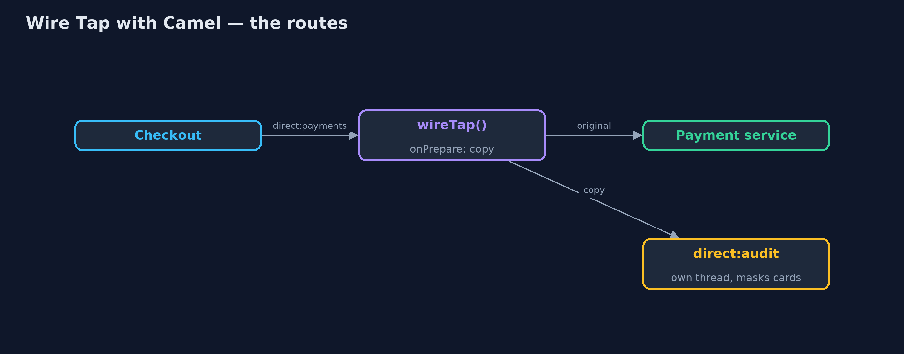
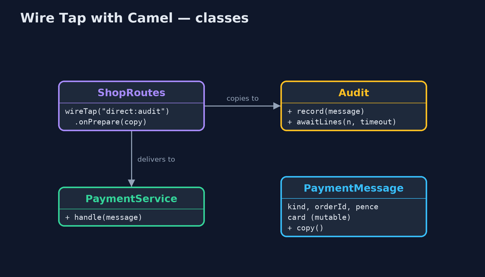
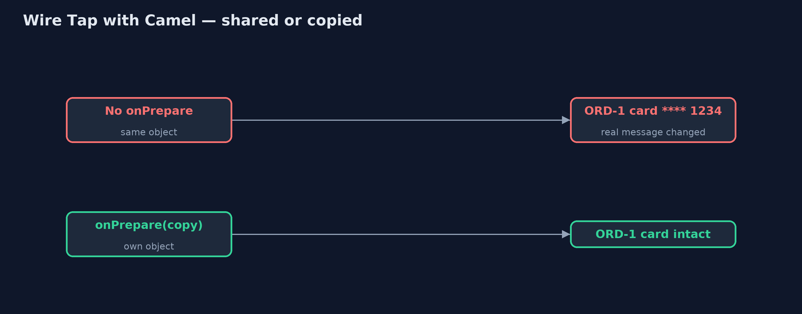
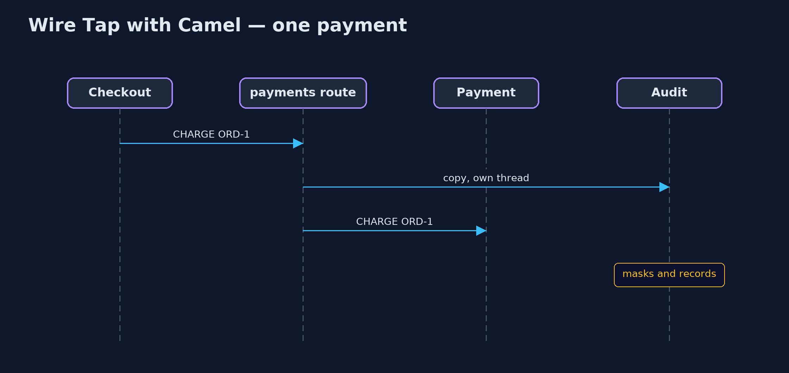

Wire Tap with Apache Camel Pattern
src/main/java/com/jk/explore/wiretapcamel/
├── Audit.java The audit log fed by the wire tap
├── CamelWireTapDemo.java The five acts, with Apache Camel's wireTap()
├── PaymentMessage.java A payment instruction
├── PaymentService.java The real work: charging and refunding
└── ShopRoutes.java Checkout sends to direct:paymentsBuild the wire tap with Apache Camel: wireTap() sends a copy of every payment to an audit route on its own thread, and onPrepare() makes sure the copy is truly a copy.
This is the framework version of the Wire Tap pattern. The plain Java version, a separate project in this category, builds the tap by hand. Here Apache Camel provides it: one wireTap("direct:audit") step in the payments route sends a copy of every message to an audit route, while the payment service carries on as if nothing were listening.
Camel's tap runs on its own thread, so a slow audit does not slow payments. It also has a trap the plain version did not: by default the tap is handed the same message object, so a tap that changes it changes the real message. onPrepare() fixes that by giving the tap its own copy.
The idea in everyday terms
Think of a shop's CCTV camera over the till. It watches every sale without the cashier doing anything differently, and the recording goes to a separate room. But if the camera room could reach through and change the receipt in the customer's hand, that would be a problem; the camera must only ever see a copy.
The scenario
The online store's payment service handled charges and refunds. Logging had been typed into it by hand, it missed the refund path, and it wrote full card numbers. Auditors want a masked copy of every payment message, without changing checkout or the payment service.
Run
Nothing to install beyond a Java 21 JDK: Camel runs inside the program on its in-memory direct: endpoints.
./gradlew runThe demo tells the story in 5 acts, each printing exact numbers that the tests check:
| Act | What it shows |
|---|---|
| 1. A tap on the route | wireTap("direct:audit") copies all 4 payments, the refund included, with cards masked; payment handles all 4, unchanged. |
| 2. Not a copy after all | The tap was handed the same object: checkout's own ORD-1 message now reads card **** 1234. |
| 3. onPrepare: a real copy | With onPrepare(copy), the audit still gets 4 lines and checkout's ORD-1 keeps its full card number. |
| 4. The audit stops | With the audit route stopped, ORD-4 is still charged; the failed copy never reaches checkout or payment. |
| 5. The bill | An audit taking 100 ms per copy: 4 payments take under 0.3 s, but the audit lags behind and catches up later; waiting copies live only in memory. |
Test
./gradlew test1 tests in DemoRunsTest. Every number the demo prints is asserted, and nothing depends on the clock, so every run gives the same result.
What the simulation got right, and what it left out
The plain Java version got the idea right: a copy of every message goes to a side channel, the sender and receiver are unchanged, taps can be attached and detached, and a slow tap on the same thread slows everything. What it left out is what Camel does differently: its tap runs on a thread pool, so a slow audit no longer slows payments but lags behind instead, with copies waiting in memory; it hands the tap the same object unless you ask for a copy; and a failing tap never breaks the main route. The plain version could not show the shared-object trap, because it copied by design.
Technologies and versions
| Technology | Version | Used for |
|---|---|---|
| Java | 21 | the code (toolchain set in build.gradle) |
| Gradle | 9.2.1 (wrapper) | build and run, nothing to install |
| JUnit | 5.10.2 | the tests |
| Apache Camel | 4.22.1 | wireTap(), onPrepare() and route control |
| SLF4J simple | 2.0.17 | Camel's logging, switched off |
| videokit | repository tool | the narrated video and animation: Piper en_US-amy-medium, speed 0.8, longer pauses (the approved amy-slow voice) |
Learning Material
| Document | What it is for |
|---|---|
| Dependencies | what the framework and infrastructure are, and why they are here |
| Problem statement | the situation and what the project must show |
| Prerequisites | what you need to know first |
| Wire Tap with Apache Camel, explained | the acts in prose |
| Session guide | a one-hour lesson with exercises |
| Animated walkthrough | the acts step by step, narrated |
| Spec | what this project must be true of |
The pattern in one picture
The main route carries on; the copy goes to the side.

Where each piece sits
The tap is one route step.

How the data moves
Without onPrepare, the audit's change reaches the real message.

Who calls whom, in order
The payment goes on at once; the copy follows.

Video
video/wire-tap-with-camel-pattern-explained.mp4 (with .m4a audio and .srt subtitles) is built by video/build_video.sh. Rendered media is not committed.
What it costs
- Shared object by default. Without
onPrepare(), the audit's masking changed the real payment instruction. - Copies in memory. A slow tap lags behind; copies still waiting are lost if the program stops. A real audit should tap to a durable queue.
- Silent failures. A failing tap never reaches the sender, so its errors must be watched separately.
When this is too much
If one service needs a log line, logging inside it is simpler. The wire tap pays off when a copy of traffic is needed on the side, by auditors or a dashboard, without touching sender or receiver.
Where you have already met this
- Camel's
wireTap()and Spring Integration'swire-tapinterceptor. - Port mirroring on network switches.
- Kafka consumers that read a topic purely for auditing or analytics.
Where this sits
This project is in messaging-integration-patterns. It is the framework version of the plain Java Wire Tap project in the same category, which is left unchanged.